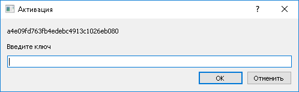
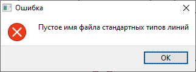
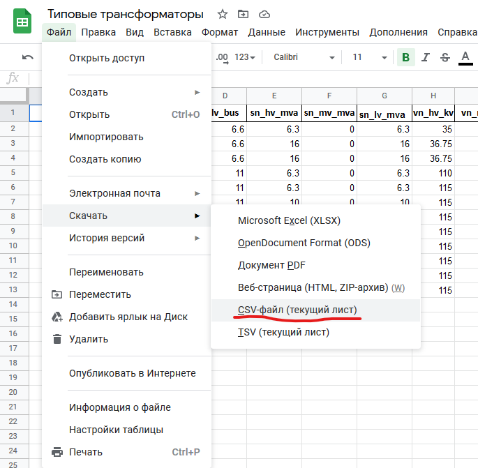
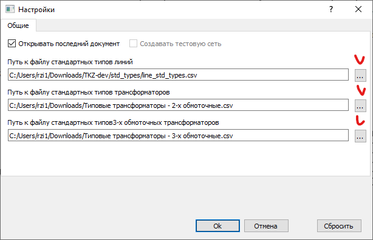

О программе¶
Автоматизация работ по расчету токов короткого замыкания для инженера службы релейной защиты, автоматики и измерений филиала электрических сетей а также повышение точности вычислений за счет использования наиболее актуальных данных паспортизации распредсети филиала.
Автоматизация работ по расчету падений напряжений в распредсетях филиала инженера по режимам оперативно-диспетчерской службы а также повышение точности вычислений за счет использования наиболее актуальных данных паспортизации распредсети филиала.
Установка базы данных Firebird¶
{kind=link}
Согласно технического задания в программу заложена функция импорта топологии и параметров электрической сети из файлов базы данных Firebird , которая используется для хранения данных программы расчёта потерь DWRES.
Для работы данной функции необходима установка на компьютере бесплатной системы управления базами данных Firebird , которая скачивается по ссылке: https://github.com/FirebirdSQL/firebird/releases/download/R2_5_9/Firebird-2.5.9.27139_0_Win32.exe Далее необходимо запустить скачанный файл и пройти стандартную процедуру инсталляции (установки).
Активация программы¶
{kind=link}
Программа защищена от произвольного копирования согласно требованиям технического задания. При первом запуске в появившемся окне активации скопируйте буквенно-цифровой код и запросите ключ активации в письме на адрес электронной почты технической поддержки electricnetcalc@gmail.com В письме укажите наименование рабочего места (филиал и должность работника) и скопированный буквенно-цифровой код.
Файлы стандартных трансформаторов и линий¶
{kind=link}
При первом запуске программы может возникает ошибка «Пустое имя файла стандартных типов линий». Это свидетельствует о том, что в настройках программы не указаны пути к файлам стандартных типов.
Файлы представляют собой Google документ, который можно редактировать по мере уточнения данных. Для скачивания необходимо перейти в меню «Файл», затем подменю «Скачать» и выбрать пункт «CSV-файл (текущий лист)». Для трансформаторов 2-х и 3-х обмоточных это действие нужно повторить для каждого листа (2-х обмоточные и 3-х обмоточные).
{kind=link}
Ссылки на скачивание:
Далее в запущенной программе выбрать пункт меню «Инструменты» и подменю «Настройки…». Откроется окно, в котором через нажатие на кнопки с тремя точками «…» нужно указать пути расположения ваших скачанных файлов типовых трансформаторов 2-х и 3-х обмоточных и типовых линий (3 файла).
{kind=link}